Toko
Online Kami
Temukan ribuan produk terbaik untuk hewan peliharaan Anda — makanan, mainan, aksesoris, dan perlengkapan lengkap.
🔥 Terlaris

Makanan hewan
Royal Canin Kitten - wet food 85gr isi 12pcs
Rp 285.000
Rp 320.000
-11%

Makanan hewan
Royal Canin Hair & Skin Care Adult - dry food 4KG
Rp 632.700
🏷️ Diskon 30%

Aksesoris
Tas kucing astronot
Rp 162.400
Rp 232.500
-30%
Aksesoris
Tali anjing - bisa custom nama
Rp 25.000
🔥 Terlaris

Makanan hewan
Whiskas Adult 1+ Mackerel Flavour - wet food 80gr
Rp 9.000
Rp 10.000
-10%

Kandang
Kandang hamster - bonus hamster wheel
Rp 289.000

Makanan Anjing
Pedigree PRO High Protein Adult Mini & Small Breed - dry food 1.3KG
Rp 165.000
🏷️ Diskon 20%

Mainan
Mainan gigitan hewan - TPR (Thermoplastic Rubber)
Rp 7.900
Rp 10.000
-20%

Makanan hewan
Royal Canin Regular Fit 32 - dry food 400gr
Rp 47.000

Toilet
FOCAT Cat Litter Box M20 - toilet untuk Kucing
Rp 55.000
🔥 Terlaris

Aksesoris
Cooling pad - alas tidur anjing sejuk
Rp 55.000
Rp 65.000
-15%

Toilet
Dog litter box - toilet untuk anjing
Rp 60.000

Mainan
Bell toy -Mainan bel untuk anjing dan juga kucing
Rp 40.000

Mainan
Hamster Wheel - mainan hamster agar terus aktif
Rp 20.000

Makanan hewan
Hamtoro seedmix - Makanan hamster 1KG
Rp 100.000

Makanan hewan
Hamtoro seedmix - Makanan hamster 500g
Rp 60.000

Kandang
Kandang kucing - kandang kucing nyaman ukuran 35cm x 35cm
Rp 230.000
Kandang
Pet cargo - kandang kucing untuk di bawa berpergian
Rp 120.000

Makanan hewan
Pedigree chicken loaf 400g - makanan basah untuk anak anjing
Rp 55.000

Snack & Treat
Dental stick anjing rasa ayam - bantu bersihkan gigi
Rp 25.000

Obat & Suplemen
Premium fish oil - suplemen premium untuk kesehatan bulu
Rp 75.000
Aksesoris
pet feeder 2 in 1 - tempat makan sekaligus tempat minum otomatis untuk kucing
Rp 85.000
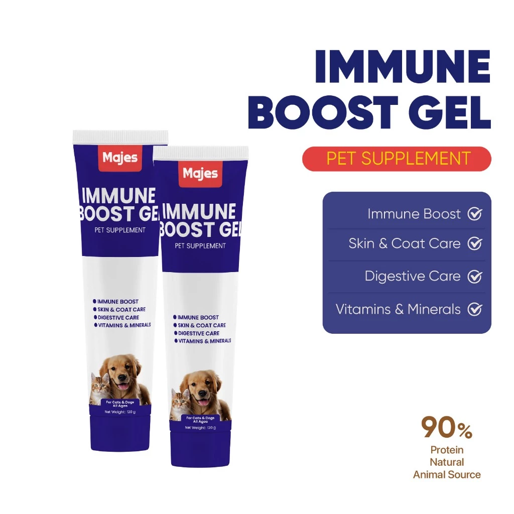
Obat & suplemen
Majes Immune Boost Gel - suplemen kesehatan dan multivitamin berbentuk gel
Rp 135.000
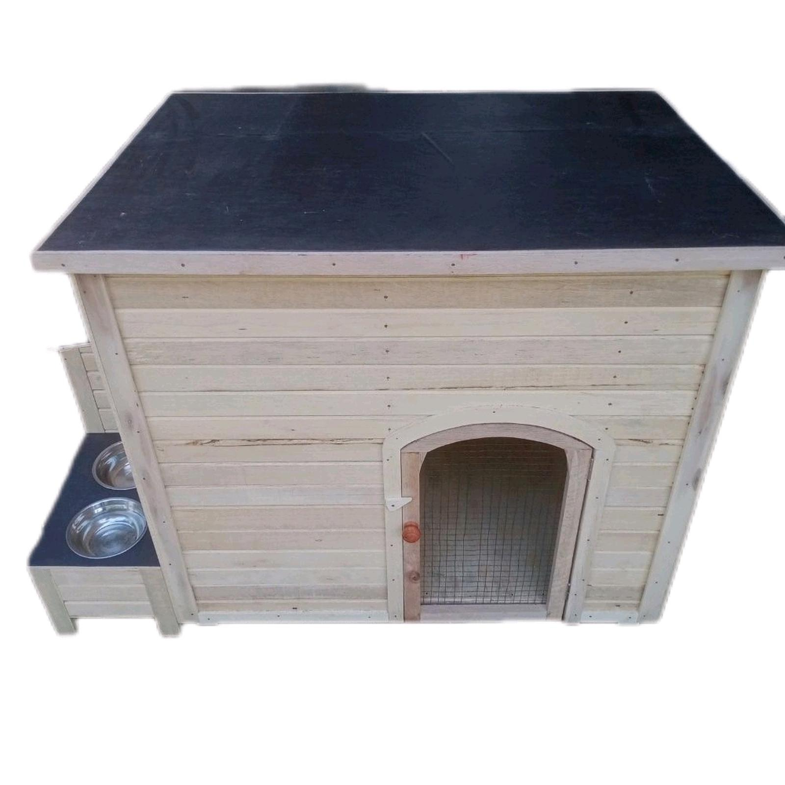
Kandang
Kandang anjing bentuk rumah - rumah kecil nyaman untuk anjing kesayangan
Rp 320.000
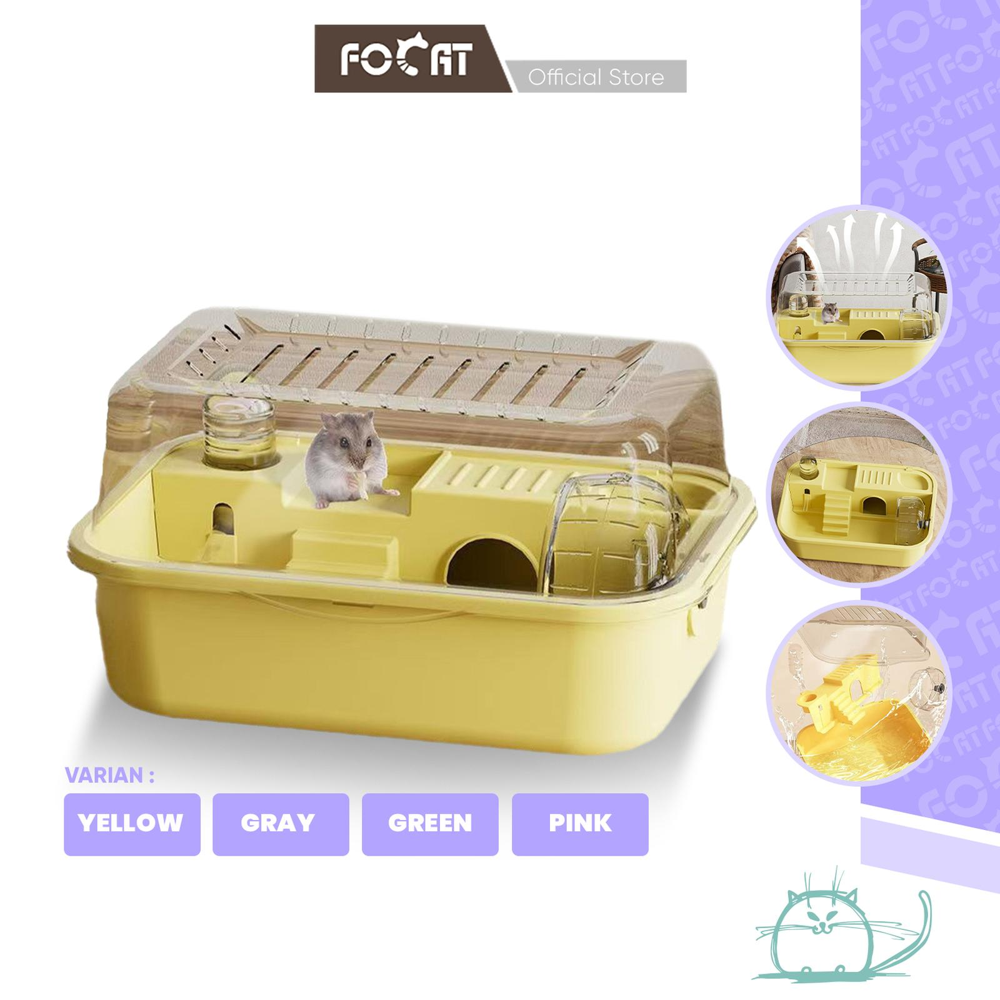
Kandang
focat kandang hamster - kandang nyaman untuk si kecil
Rp 150.000
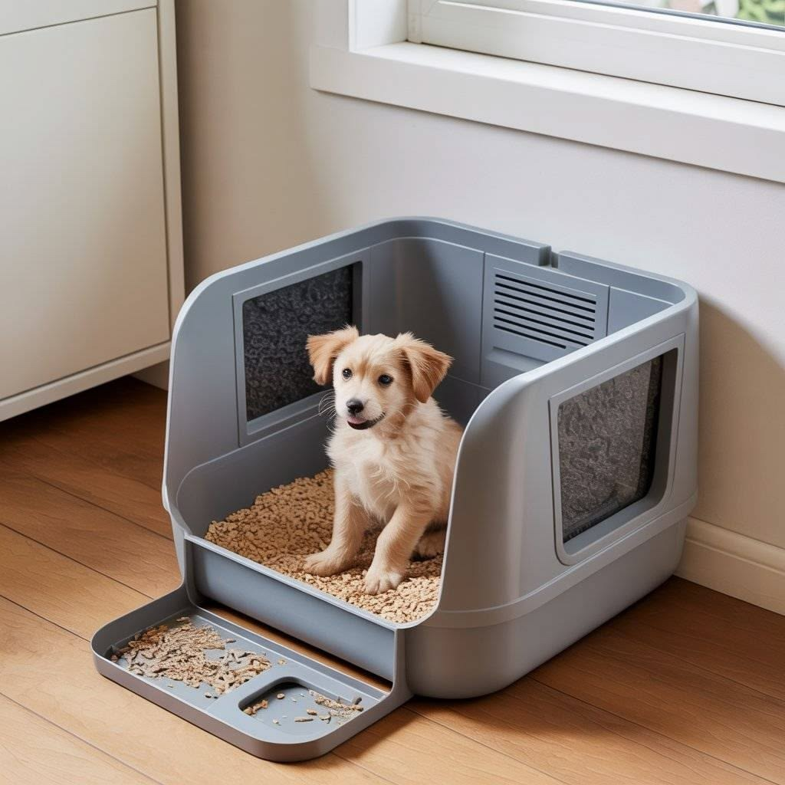
Toilet
high side litter box - toilet untuk anjing
Rp 82.000

Obat & Suplemen
Olive Care SALMONIC Salmon Oil - suplemen untuk kesehatan anjing dan kucing
Rp 79.000
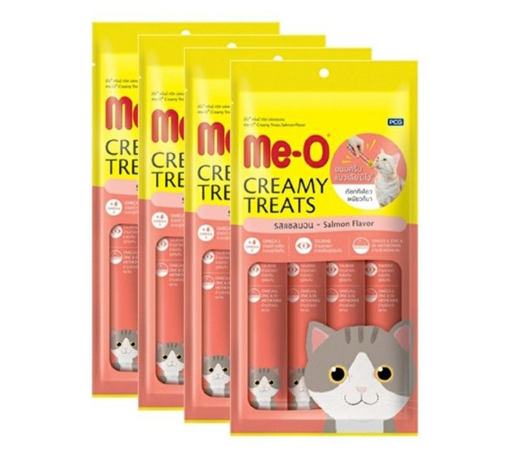
Snack & Treat
Me-o creamy treats - treat kucing isi 4 60g
Rp 29.000

Obat & Suplemen
Olive Care NATIVE+ GOLD - suplemen untuk kucing
Rp 32.000
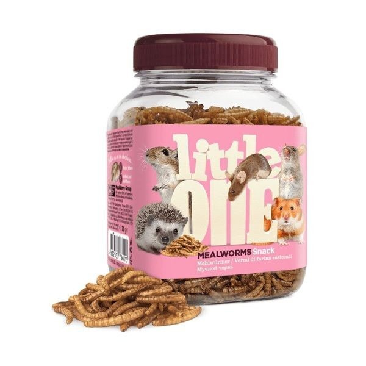
Snack & Treat
Little One Mealworms - snack untuk hewan kecil
Rp 40.000
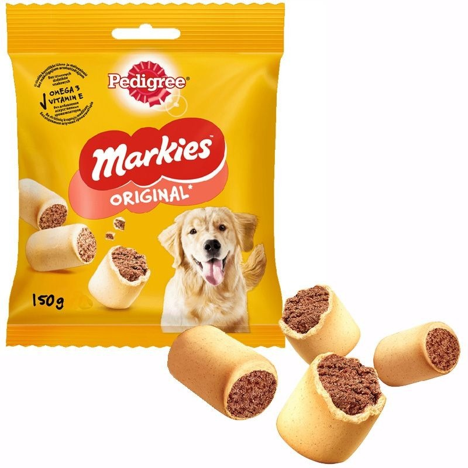
Snack & Treat
Pedigree Markies Original - snack untuk anjing
Rp 20.000
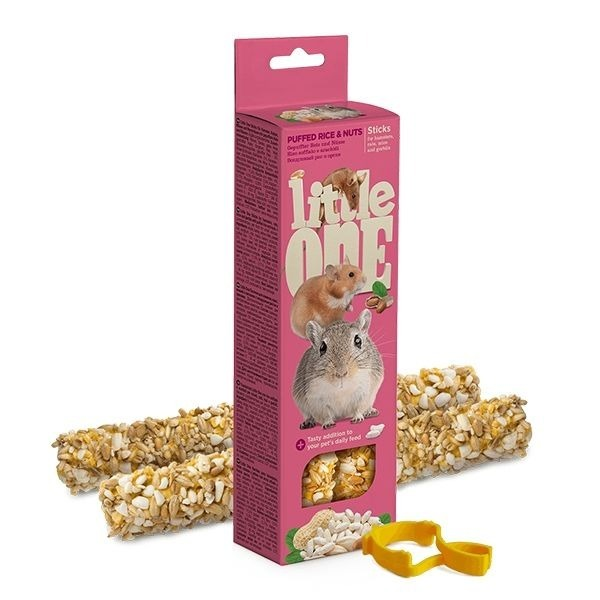
Snack & Treat
Little One Sticks Puffed Rice & Nuts - snack untuk hamster
Rp 30.000
Mainan
Mainan Ikan Catnip - mainan untuk kucing
Rp 15.000

Kandang
Tas Ransel Hewan MooPet - backpack untuk membawa kucing dan anjing kecil
Rp 200.000
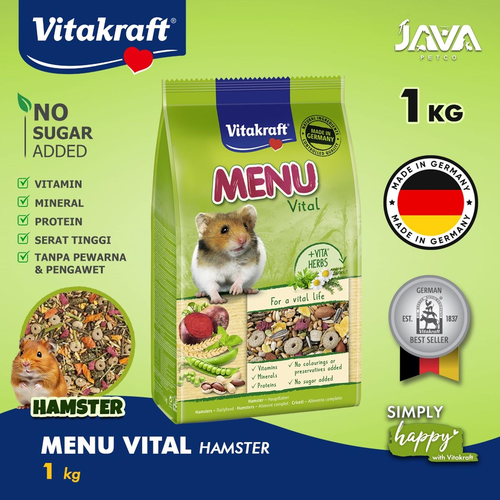
Makanan
Vitakraft Menu Vital Hamster - makanan hamster
Rp 70.000

Kandang
Portable Pet Playpen - kandang lipat portabel
Rp 430.000

Kandang
Royal Canin Mother & Babycat Mousse
Rp 90.000

Snack & Treat
Ishtarz Cat Snack Creamy Treat
Rp 30.000
Mainan
Mainan Tongkat Bulu - mainan interaktif kucing
Rp 25.000

Toilet
Kotak Pasir Kucing (Cat Litter Tray)
Rp 30.000
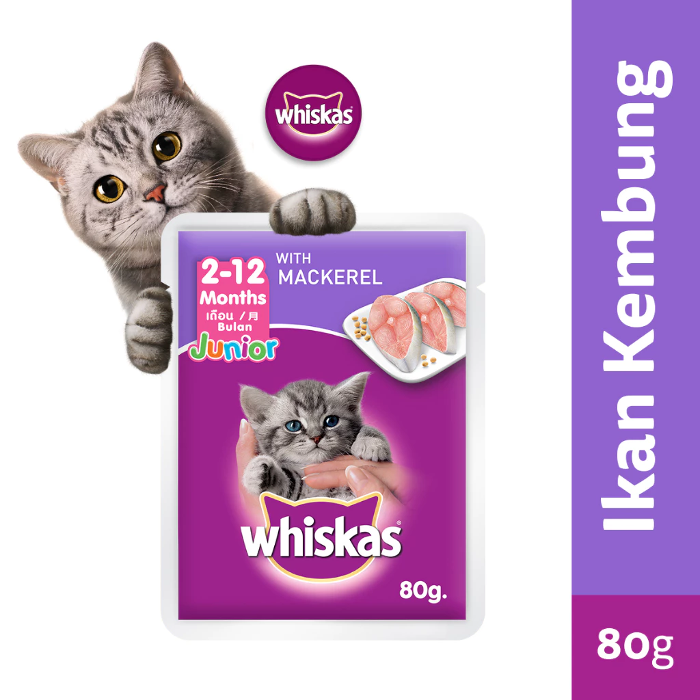
Makanan
Whiskas Junior Mackerel - wet food 80G
Rp 35.000
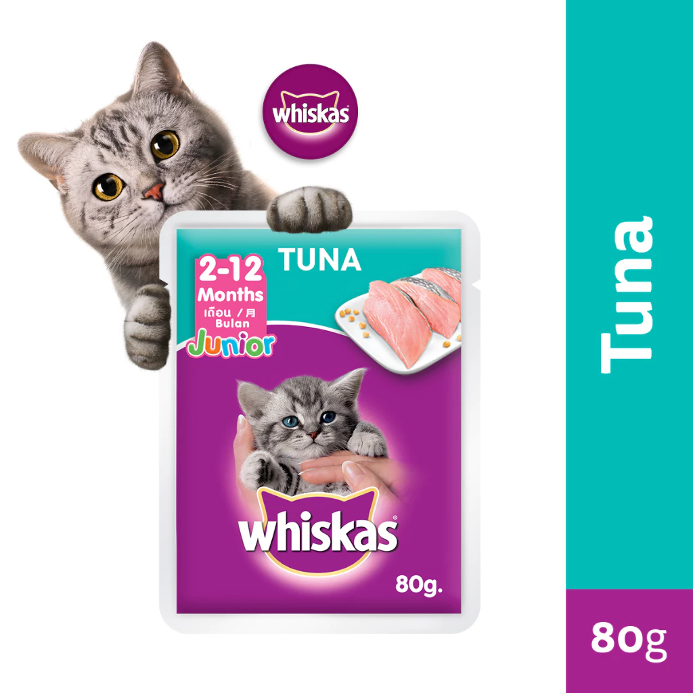
Makanan
Whiskas Junior Tuna - wet food 80G
Rp 40.000